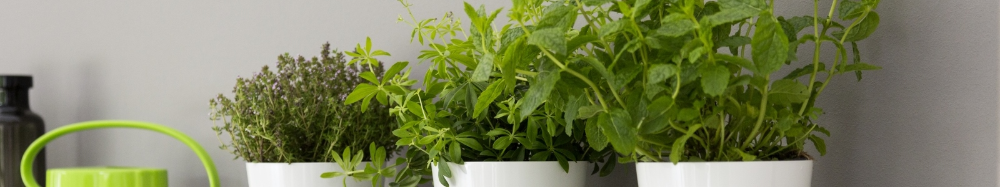
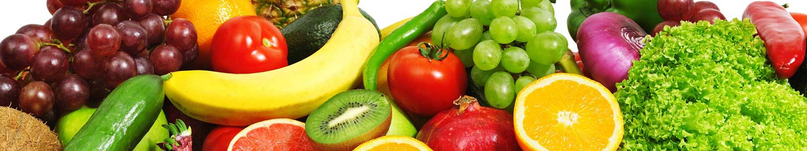

Hoje em dia vocês perceberam quanto a demanda por produtos orgânicos cresceu?
As pessoas cada vez mais estão preocupadas com o quesito saúde e sabendo o que sabemos sobre agrotóicos,
fertilizantes químicos e mesmo os impactos da produção em larga escala é natural que se iniciasse uma busca por
algo mais bacana e menos prejudicial a sí mesmas e ao meio ambiente.
O nosso objetivo é:
Oferecer produtos orgânicos à preços mais acessíveis aproveitando para oferecer ganhos financeiros aquelas pessoas que, por acaso, tem um pé de alguma fruta, legume ou verdura bacana que mesmo chamando a família toda para jantar não vão conseguir consumir, sabe?
Ao invés de deixar as frutinhas lá aprodrecendo e fazendo bagunça no chão, ou no máximo servindo de adubo para as outras que tal ganhar uns trocados vendendo as sobras para quem quer consumir?
Você pode escolher se aceita que a pessoa vá buscar seus extras, se você pode entrega-los e mesmo recorrer ao nosso sistema
de transporte que recolhe os alimentos na sua casa e distribuí aos seus compradores.
Sim, no seu cadastro vai e a sua localização e lá você pode colocar qual a quilimetragem máxima que entrega para não correr o
risco de receber um pedido do Rio Grande do Sul quando reside no interior de São Paulo por exemplo.
O mesmo para o comprador,
que vai ter todos estes dados em mãos para poder escolher fazer uma compra de acordo com o que deseja.
Você vai ter uma variedade de alimentos muito maior do que a que encontra nos mercados, imagine pegar uma romã há um preço bem legal e ainda por cima orgânica?
O objetivo, ambicioso, do Natureza Compartilhada é propciar a compra de alimentos orgânicos à preços normais de mercado,
promovendo maior qualidade de vida e comodidade.
Para uma segurança maior bolamos também um sistema de qualificação de vendedores, assim, vocês podem sempre dar um feedback ao
vendedor e garantir que o mesmo possa melhorar, caso deseje.